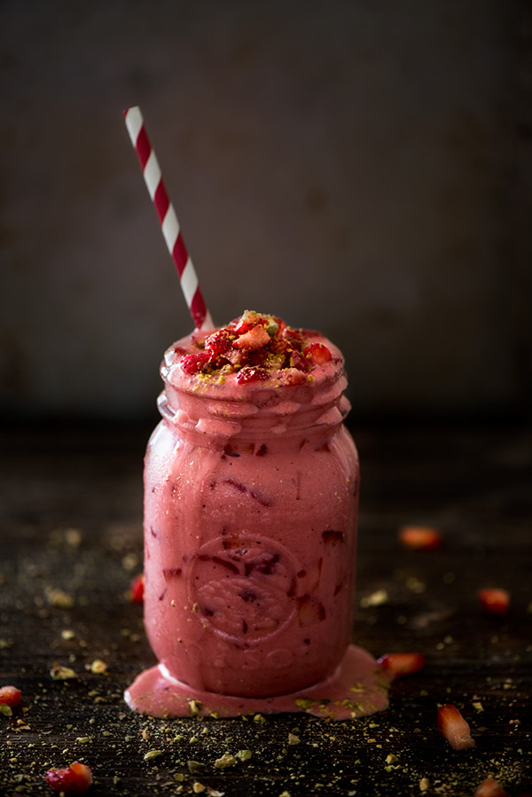

Serves 2
Lassi is an important part of indian culture. Especially around summers and on Holi. The festival of colors. Lassi is a good alternative to soda or other carbonated drinks.
It's an affortless, quick and nutrition filled recipe, that you can make with only a blend. Everybody loves icecream. All they need beside an ice-cream is Frozen Lassi with strawberries.
So all the lazy people, It's time to get your ingredients ready and stare directly into the eyes of the sun until it melts abd turns into a slice of mangooye ice-cream.